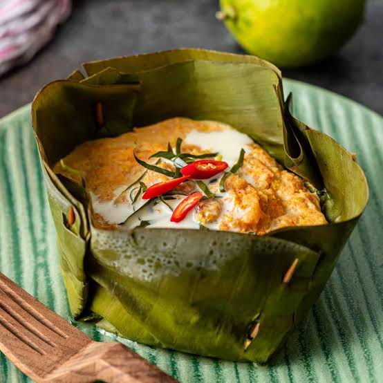
TraditionalFish Amok
A classic Cambodian dish made with fish, coconut milk, kroeung and fragrant spices.
$6 - $12
From local Khmer favourites to international cuisine — discover the best places to eat in Siem Reap.
Find restaurants serving your favorite dishes.

TraditionalA classic Cambodian dish made with fish, coconut milk, kroeung and fragrant spices.
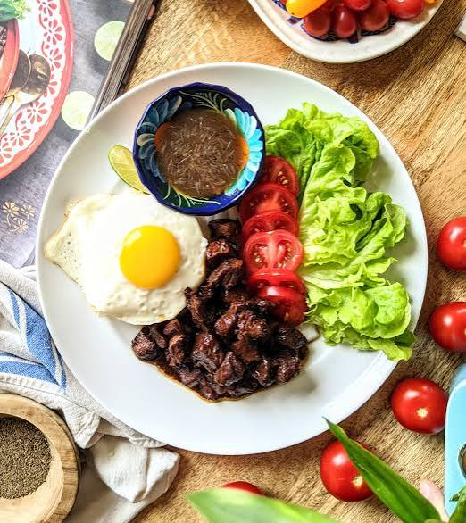
PopularTender beef served with fresh vegetables, rice and the famous Cambodian pepper-lime sauce.
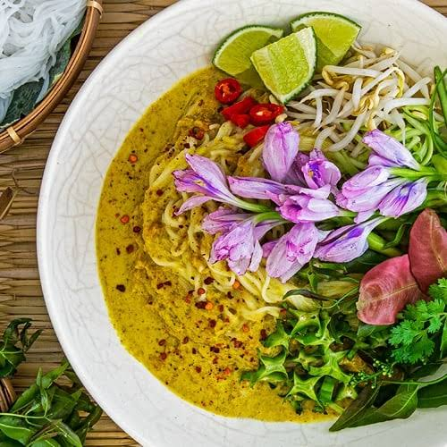
BreakfastCambodian rice noodles served with a fresh fish-based green curry and vegetables.
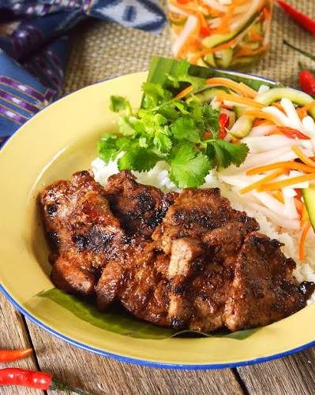
BreakfastGrilled pork marinated in garlic and coconut milk served with fragrant steamed rice.
A rich Cambodian curry prepared with coconut milk, kroeung, vegetables and meat.
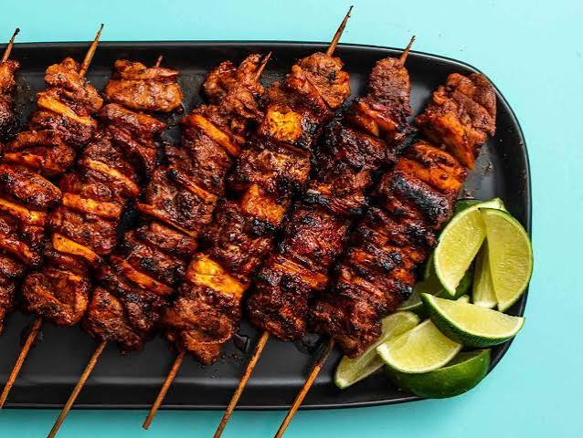
Street FoodDelicious Cambodian-style grilled meat skewers commonly enjoyed as a street food snack.
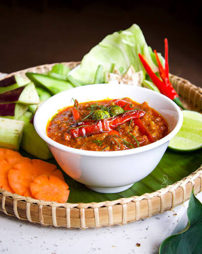
TraditionalA creamy Cambodian dip made with fermented fish, coconut milk, pork and aromatic kroeung.
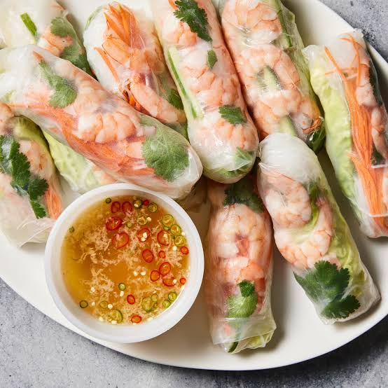
FreshFresh vegetables, herbs and noodles wrapped in soft rice paper and served with dipping sauce.
Click any drink to see where you can find it in Siem Reap.
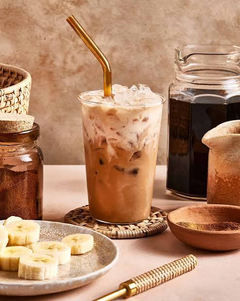
CozyTucked-away warmth and the smell of strong coffee. A quiet corner where locals linger, the ice clinks softly, and condensed milk sweetens every slow sip. The vibe? Pure, unhurried comfort.
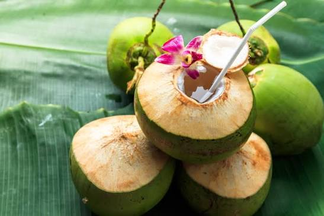
NaturalBarefoot ease under leafy shade. A young coconut cracked open, straw in hand — the vibe is fresh, earthy, and completely unplugged from the city rush.
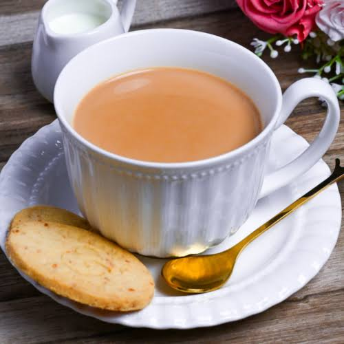
TraditionalWooden chairs, old stories, and tea poured the way grandmothers did. The vibe is rooted in Khmer tradition — warm, familiar, and full of memory.
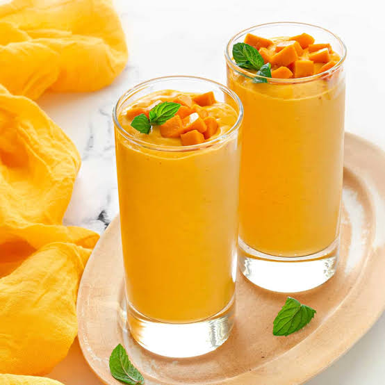
ModernClean lines, soft playlists, and a smoothie that looks as good as it tastes. The vibe is fresh, urban, and effortlessly stylish — Siem Reap's new café energy.
Nothing loud, nothing extra. Just a lime soda, a clean table, and space to think. The vibe is calm, minimal, and refreshingly simple.
Hands moving fast, cane stalks cracking, ice tumbling into a cup. The vibe is raw, loud, and alive — real Siem Reap street energy at its best.
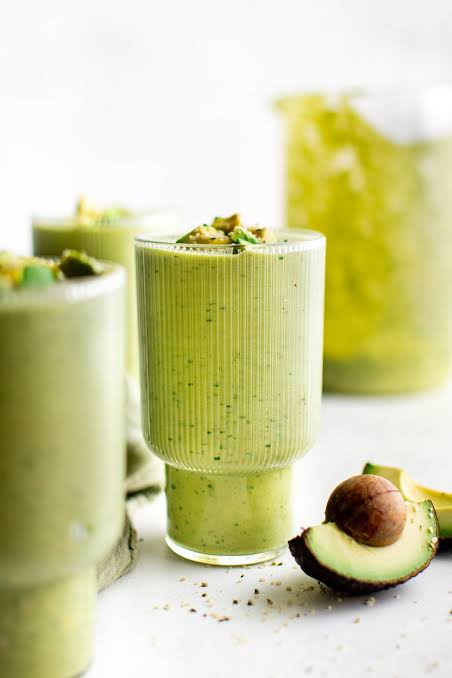
ModernA cool, creamy drink in a bright space with plants and slow music. The vibe is laid-back luxe — the kind of café you never want to leave.
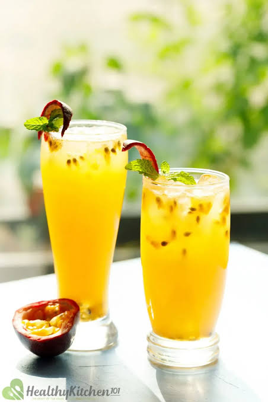
MinimalistA single bright glass, a quiet moment, and a burst of tropical tang. The vibe is easy and uncomplicated — a small pause in a busy day.
Explore local restaurants, traditional dishes, drinks and unique food experiences around Siem Reap.